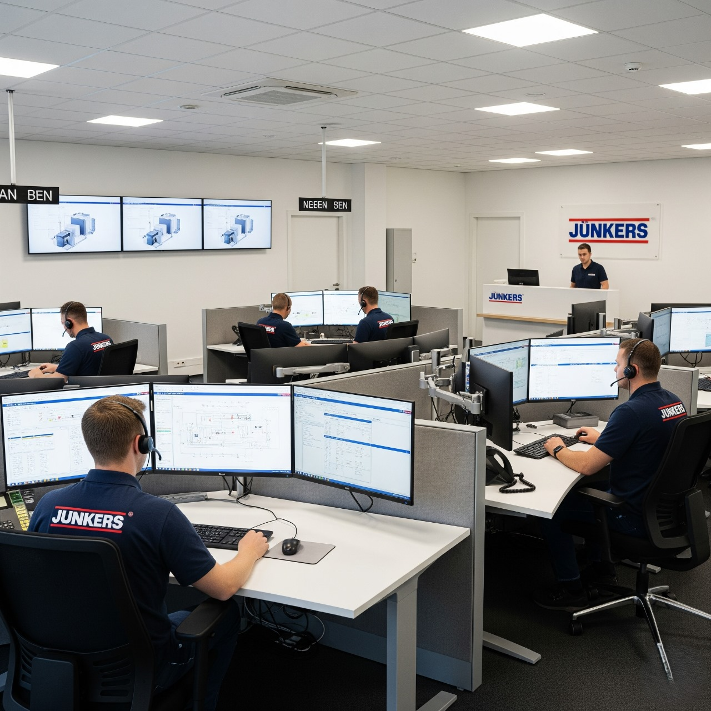

مركز صيانة سخانات جونكر
نمتلك أكثر من 15 عامًا من الخبرة في صيانة سخانات جونكر بمختلف الموديلات في مصر. نقدم خدمات الصيانة المتكاملة بدءًا من الفحص الدوري وصولًا إلى الإصلاحات العاجلة، مع ضمان تقديم الدعم الفني الفوري لعملائنا.
خدمات الصيانة المتخصصة
- تشخيص الأعطال الكهربائية والحرارية بدقة عالية.
- إصلاح واستبدال المكونات الأساسية للسخان مثل عنصر التسخين، الصمام الحراري، والخزان الداخلي باستخدام قطع أصلية.
- تنظيف وصيانة دورية لزيادة كفاءة استهلاك الطاقة وإطالة عمر السخان.
- صيانة عاجلة وسريعة تصل إلى منزلك أو مكتبك بأسرع وقت ممكن.
اختيارك لمركزنا يعني الحصول على أفضل خدمات صيانة سخانات جونكر في مصر. نحن نضمن جودة العمل والدقة في كل عملية صيانة، مدعومة بخبرتنا الطويلة وسجلنا الحافل برضا العملاء. لتنسيق المواعيد أو طلب خدمة صيانة عاجلة، يمكن الاتصال على رقم خدمة عملاء جونكر 17412.
خبرة وجودة في كل صيانة
يضم مركز صيانة جونكر فريقًا من الفنيين المتخصصين والمدربين على أعلى مستوى لإجراء جميع أعمال الصيانة بكفاءة عالية. نقدم خدماتنا يوميًا مع استخدام قطع غيار أصلية لضمان الأداء الأمثل للسخان بعد كل عملية صيانة.
اتصل الآن لحجز صيانة
الخط الساخن: 17412
فريق الدعم الفني متواجد يوميًا لتنسيق المواعيد وخدمات الصيانة عبر الرقم 17412.
ساعات العمل
متاحة يوميًا:
من السبت إلى الجمعة: 8:00 صباحًا — 10:00 مساءً
موقع المركز
الخبرة
أكثر من عقد في السوق المصري، مع آلاف العملاء راضين.
الاعتماد
توكيل جونكر الرسمي، بنستخدم قطع غيار أصلية 100%.
الثقة
ضمان 6 شهور على أي صيانة أو تغيير قطع غيار.
الشفافية
أسعارنا واضحة قبل بداية أي تصليح وخالية من أي رسوم خفية.
خدمات صيانة سخان جونكر المتكاملة
مركز صيانة سخانات جونكر – دعم فني موثوق
يوفّر مركز صيانة سخانات جونكر خدمات شاملة للصيانة والإصلاح، إلى جانب دعم فني متواصل. إذا لاحظت ضعف أداء السخان أو تقلب درجات الحرارة، يمكن لفريقنا تقديم نصائح واستشارات مجانية عبر الهاتف قبل إرسال الفني إلى موقعك. كما نحرص على متابعة الحالة بعد الصيانة لضمان استقرار أداء السخان ومنع عودة الأعطال، لأن الجودة والثقة هما أساس خدماتنا.
إشارات تحتاج انتباه صيانة
قد تظهر بعض العلامات التي تشير إلى ضرورة صيانة سخان جونكر، مثل عدم تسخين المياه بسرعة أو تقلب درجة الحرارة، أو سماع أصوات غير معتادة من الجهاز. حتى التسريبات الصغيرة لا ينبغي تجاهلها، إذ أن الاهتمام المبكر يمنع تحول المشكلة إلى أعطال أكبر تتطلب إصلاحات مكلفة.
مركز صيانة سخانات جونكر – دعم فني موثوق
يوفّر مركز صيانة سخانات جونكر خدمات شاملة للصيانة والإصلاح، إلى جانب دعم فني متواصل. إذا لاحظت ضعف أداء السخان أو تقلب درجات الحرارة، يمكن لفريقنا تقديم نصائح واستشارات مجانية عبر الهاتف قبل إرسال الفني إلى موقعك. كما نحرص على متابعة الحالة بعد الصيانة لضمان استقرار أداء السخان ومنع عودة الأعطال، لأن الجودة والثقة هما أساس خدماتنا.
إشارات تحتاج انتباه صيانة
قد تظهر بعض العلامات التي تشير إلى ضرورة صيانة سخان جونكر، مثل عدم تسخين المياه بسرعة أو تقلب درجة الحرارة، أو سماع أصوات غير معتادة من الجهاز. حتى التسريبات الصغيرة لا ينبغي تجاهلها، إذ أن الاهتمام المبكر يمنع تحول المشكلة إلى أعطال أكبر تتطلب إصلاحات مكلفة.
مخاطر تأجيل الصيانة
تأجيل الصيانة الدورية يؤدي إلى تفاقم الأعطال بسرعة. على سبيل المثال، الترسبات الكلسية الناتجة عن المياه العسرة قد تسد الأنابيب وتقلل من كفاءة التسخين. كما أن المشاكل الكهربائية الصغيرة قد تتطور لتسبب تلف الدوائر الإلكترونية إذا لم يتم التعامل معها بواسطة فني مختص.
تجاهل تسريبات المياه الصغيرة يمكن أن يتحول إلى تسريب كبير يضر بالمكونات الداخلية للسخان أو يسبب خطرًا كهربائيًا. كل يوم بدون صيانة يزيد من المخاطر ويهدد أداء السخان، ويزيد من تكلفة الإصلاح مستقبلاً.
صيانة سخان جونكر الاحترافية – تواصل معنا فورًا
تجنّب الأعطال المفاجئة وتواصل مع مركز صيانة جونكر المعتمد لإجراء فحص وإصلاح فوري. خدمات العملاء متاحة على مدار الساعة لاستقبال البلاغات والاستفسارات، مع تغطية لكافة محافظات مصر.
يقوم الفريق الفني بعملية فحص كاملة تشمل تنظيف الترسبات الكلسية وفحص العناصر الإلكترونية وضبط إعدادات الحرارة، لضمان عودة السخان لأعلى كفاءة ممكنة. في حال استدعى الأمر استبدال أي جزء، يتم استخدام قطع غيار أصلية لضمان جودة العمل وطول عمر السخان.
الاتصال المبكر بفريق الصيانة يوفر الوقت والتكاليف ويقلل من احتمال حدوث أعطال أكبر. في حال وجود تسريب واضح أو رائحة احتراق، يُنصح بفصل التيار الكهربائي وإغلاق صمام المياه الرئيسي فورًا قبل الاتصال بفريق الصيانة.
نستخدم قطع غيار أصلية مع ضمان جودة العمل. اتصل على 17412 الآن لحجز زيارة فنية عاجلة.
الأسئلة الشائعة حول صيانة السخانات
آراء العملاء
★★★★★
أحمد سعيد
خدمة سريعة وفعالة، الفني وصل في نفس اليوم وحل المشكلة تمام.
★★★★★
منى حسن
الخط الساخن 17412 ساعدني أرتب موعد بسرعة، والفني محترف جدًا.
★★★★★
محمد فؤاد
قطع الغيار أصلية والخدمة ممتازة. أنصح أي حد بصيانة سخان جونكر معهم.
★★★★★
ليلى كمال
خدمة العملاء ممتازة والفني شرح كل حاجة بالتفصيل قبل الصيانة.
★★★★★
أحمد علي
التواصل مع المركز سهل جدًا، والفنيين محترفين في التعامل مع السخان.
★★★★★
سارة محمود
أفضل تجربة صيانة مرت بيها، السخان اشتغل كالجديد بعد الزيارة.
تواصل معنا
فريق خدمة العملاء مدرب لتقديم المساعدة الفورية، سواء للاستعلام عن حالة طلبك أو لتحديد موعد الزيارة أو لطلب صيانة عاجلة. اتصل الآن على الخط الساخن 17412.
أرقام الهاتف
- 01040078780
- 01040078782
- 01040078781
أرقام أرضي
- 0237495077
- 0237495022
- 0237495070
- 0237495040
خدمة العملاء
احجز الصيانة الآن عبر الخط الساخن 17412 أو من خلال موقعنا الإلكتروني لحجز الخدمة بسرعة وسهولة.